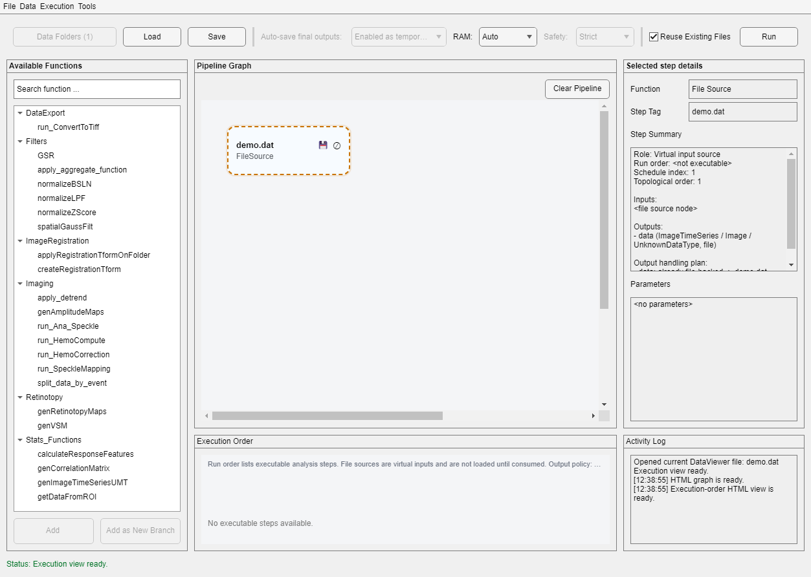

Build and run a small, reproducible sequence of analysis functions on the active recording.
Open a .dat or .umt file with an accessible Save Folder.

The activity log and execution view show completed steps. Compatible image results can return to DataViewer; reports or other terminal outputs remain files.
The policy controls persistence. Temporary files use the PMTMP_ prefix and are cleaned at lifecycle boundaries unless saved. Permanent outputs, dataHistory.mat, and pipeLog.mat are written by PipelineManager.
Review destructive functions.
applyRegistrationTformOnFolder rewrites every .dat file in place and is effectively irreversible.
| Problem | Action |
|---|---|
| A function cannot be connected | The source output and destination input semantic types are incompatible. |
| A step is skipped | Check required files, Raw Folder state, and the execution-plan issues table. |
Continue with the Pipeline Manager reference.